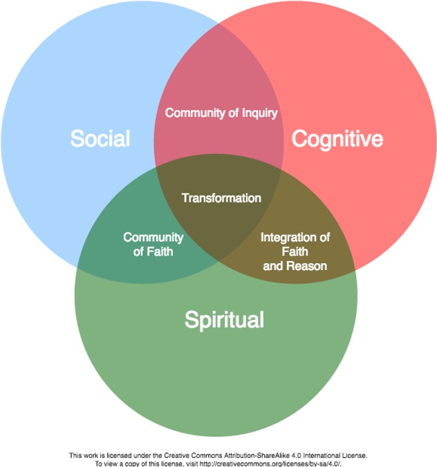

Unit 3 Designing Learning Experiences
Overview
In Unit 3, we focus on designing learning experiences that create the opportunities for students to achieve course learning outcomes. Unit 3 is designed to be completed over several weeks of your practicum, and will be completed concurrently with Unit 2 Classroom Observation and Unit 4 Teaching/Facilitation.
In this unit, you will design a minimum of three lesson plans that can be applied within your practicum setting. Ideally, you will also facilitate this learning as part of Unit 4 Teaching/Facilitation. However, that may not be practical. Your lesson plans can include learning activities such as face-to-face or online lectures, discussions, presentations, or other activities.
Topics
In this unit, we will focus on:
- Designing Lesson Plan
- Authentic and Inclusive Learning Experiences
- Cultural Competency
- Critical and Creative Thinking
Learning Outcomes
In this unit, you will engage in reflective practice through classroom observation. By the end of this unit, you should be able to:
- Design authentic and inclusive learning experiences
- Synthesize adult learning theory with practical experience facilitating or teaching
- Develop a learning assessment that effectively measures student learning
- Apply assessment strategies to measure student learning
- Develop lesson plans that include aligned student learning outcomes, learning activities, and learning assessment
- Apply principle(s) of adult learning theory in a lesson plan.
- Provide formative feedback to learners after assessing their learning.
In addition to these learning outcomes, for each lesson plan you should also be able to achieve these learning outcomes:
LESSON PLAN 1: AUTHENITIC and INCLUSIVE LEARNING EXPERIENCES
- Create a learning experience that fosters connections between students.
- Apply knowledge of liberating structures to a learning activity.
LESSON PLAN 2: CULTURAL COMPETENCY
- Design a learning experience that integrates culturally-inclusive communication processes.
- Evaluate student learning related to culturally-inclusive communication.
LESSON PLAN 3: CRITICAL AND CREATIVE THINKING
- Create a lesson that integrates Universal Intellectual Standards into a learning activity or assignment.
Activity Checklist
Here is a checklist of learning activities you will benefit from in completing this unit. You may find it useful for planning your work.
Learning Activities
Below link is dead
Read: Queens University Center for Teaching and Learning. (n.d.) Learning outcomes; course/curriculum design.
Review materials from previous courses related to lesson planning.
Review the Lesson Plan Template
Review: Liberating structures: Including and unleashing everyone
In the Collaborative White Board, share concepts/strategies on authentic and inclusive learning with other learners.
Re-read materials on culturally competent teaching from LDRS 662, including:
- Steele, D. & Cohn-Vargas, B. (2014). Identity safe classrooms are places where students can belong and learn. Stanford Graduate School of Education, Stanford Center for Opportunity Policy in Education.
- In the Collaborative White Board, share concepts/strategies on culturally inclusive learning with other learners.
- Steele, D. & Cohn-Vargas, B. (2014). Identity safe classrooms are places where students can belong and learn. Stanford Graduate School of Education, Stanford Center for Opportunity Policy in Education.
Prepare for Lesson Plan 3: Critical and Creative Thinking:
Paul, R. and Elder, L. (2006.) The miniature guide to critical thinking: Concepts and tools.
Review prior course readings: Hattie, J., Timperley, H. (2007). The power of feedback.
Below link is dead
- Review of The Power of Feedback. Educational Research, 77, 81-112. doi:10.3102/003465430298487. Article is available through the TWU Library.
- In the Collaborative White Board, share concepts/strategies on critical and creative thinking with other learners.
- Complete your Lesson Plan Design Log. This will be submitted as part of your Reflective Practice Practicum Portfolio.
Assessment
- The assessment for this unit includes the design of three lesson plans. For each lesson plan, you will complete the following:
- Design 3 lesson plans, following the Lesson Plan Template
- Lesson Plan 1: Authentic and Inclusive Learning Experiences
- Lesson Plan 2: Cultural Competency
- Lesson Plan 3: Critical and Creative Thinking
- Lesson Plan 1: Authentic and Inclusive Learning Experiences
- Post your draft Lesson Plan in a discussion post for feedback from your instructor and other learners.
- Incorporating feedback from other learners, instructor, and practicum supervisor, submit your final Lesson Plan in the Assignment area.
- Design 3 lesson plans, following the Lesson Plan Template
3.1 Designing Lesson Plans
In this unit, you will design three lesson plans, each with a specific focus.
Each lesson plan will be designed using a template that includes:
- Student Learning Outcomes
- Learning Activities
- Learning Assessment
Each lesson plan will have a focus on a key concept you have studied in your graduate coursework. Through the development of lesson plans, you have an opportunity to apply what you have learned in your courses within a real-world teaching/facilitation experience. Your lesson plan will be designed to teach/facilitate achievement of learning outcomes related to a course you plan to teach/facilitate.
This practicum provides an opportunity for you to develop a lesson plan incorporating three key elements of authentic and effective teaching and learning:
- Authentic and Inclusive Learning
- Cultural Competency
- Critical and Creative Thinking
Each lesson plan will also be designed to incorporate:
- Principles of a learning community
- Adult learning theory
Activity: Preparation for Lesson Plan Design
In preparation for designing lesson plans, be sure to review these materials.
- Queens University Center for Teaching and Learning. (n.d.) Learning outcomes; course/curriculum design.
- McTighe & Wiggins (2012). Understanding by design framework. ASCD.
- Review materials from previous courses related to lesson planning.
- Review the Lesson Plan Template.
Questions to Consider
- Which learning community model will I use to guide my lesson plan design?
- How can I build a community of learning in an online course?
- What are some key principles of adult learning I want to integrate into my online course?
- Why are learning outcomes so important to include in a lesson plan?
- What is the value of an ungraded, formative learning activity? How will I convey this value to students who do not want to participate in ungraded activities?
- What assessment tool will allow me to effectively answer the question: did students learn what I wanted them to learn?
3.2 Authentic and Inclusive Learning Experiences (Lesson Plan 1)
Now that we have reviewed lesson plan design, including creative effective learning outcomes and integrating principles of adult learning theory, how can we make our lessons transformational for students? In this unit, you will design a lesson plan that integrates strategies to create an authentic, inclusive, liberating learning experience. As humans, we long for authenticity in our relationships. We want to feel “at home” in the organizations that are part of our lives – our families, schools, communities, places of worship. We seek connection. We search for a place where we are known. This sense of being “at home” is essential to our experience as learners. Deep, authentic learning happens in spaces where we feel connected with others – places and spaces where we are known. Palmer (1998) refers to this as the “spiritual quest for connectedness” (p. 5). In his book, The Courage to Teach: Exploring the Inner Landscape of a Teacher’s Life, Parker Palmer (2017) argues that the “inner landscape of teaching” is an essential foundation out of which authentic learning experiences emerge.
“Teachers possess the power to create conditions that can help students learn a great deal – or keep them from learning much at all. Teaching is the intentional act of creating those conditions, and good teaching requires that we understand the inner sources of both the intent and the act” (Palmer, 2017, p. 7).
Learning communities are authentic, emotionally-safe and inclusive spaces (whether physical or virtual) where learners and teachers come together to engage in deep learning. By definition, a learning community includes both LEARNING and COMMUNITY.
Below are three key learning community models you studied in LDRS 664. As you review these models, consider how you will integrate principles from one of these models in your lesson planning.
Learning Community Pyramid (Bower & Dettinger, 1998)
The Learning Community Pyramid, developed by Bower & Dettinger (1998) includes academic, social, and physical components. They describe academic components as those that focus on the curriculum and learning that takes place. The social components are the elements of trust and inclusivity that create space for community. The physical component is the “place or facility where the community meets or resides” (Bower & Dettinger, 1998, p. 17). In the case of this course, that “place” is the course hub.
The Community of Truth (Palmer, 2017)
Palmer’s (2017) learning community model incorporates both learning and community” with a “subject” as the center, surrounded by “knowers” who are in relationship to both each other and the subject. Palmer (2017) assets that “the community of truth, far from being linear and static and hierarchical, is circular, interactive, and dynamic” (p. 106). The learning that takes place in this model is captured in this statement: “I understand truth as the passionate and disciplined process of inquiry and dialogue itself, as the dynamic conversation of a community that keeps testing old conclusions and coming into new ones” (p. 106). Instead of solely focusing on what we must teach (and what students must learn), Palmer challenges us to consider how we all might learn something more together – more than is already known – through the teaching/learning experience. In this way, we must consider that we are not just engaged in transferring information or knowledge, but that (in addition to that), together we might create new knowledge.
The Trinity Community of Inquiry (Madland, 2017)
In our online courses, Trinity Western University seeks to create learning communities that engage student learning on a cognitive, social, and spiritual level. The Trinity Community of Inquiry model is a visual representation of these three aspects of learning (Social, Cognitive, and Spiritual), and how they interact with each other. At the intersections of these elements, you find:
- Community of Inquiry
- Community of Faith
- Integration of Faith and Reason
Combined, these three elements can lead to transformational learning – an aspiration we hold in this course and program – and a fundamental goal of higher education in a broader sense.

3.2.1 Activity: Prepare for Lesson Plan 1: Authentic and Inclusive Learning Experiences
In preparation for designing this lesson plan, review these materials, as well as materials from previous courses related to this concept.
- Review the three learning community models you studied in LDRS 664.
- Pyramid Model of Learning Communities in Brower, A. & Dettinger, K. (1998). What is a learning community?: Toward a comprehensive model. About Campus: Enriching the Student Experience. 3(5), 15-21.
- Trinity Community of Inquiry in Madland, C. (2017). The Trinity Community of Inquiry. Creative Commons License.
- Community of Truth in Palmer, P. (2017). The courage to teach: Exploring the inner landscape of a teacher’s life. San Francisco: Wiley.
- Pyramid Model of Learning Communities in Brower, A. & Dettinger, K. (1998). What is a learning community?: Toward a comprehensive model. About Campus: Enriching the Student Experience. 3(5), 15-21.
As you recall your learning in LDRS 664 Creating Authentic Learning Communities and other courses, consider 2-3 concepts or teaching strategies you learned related to creating authentic and inclusive learning experiences. In the Collaborative White Board, share those concepts/strategies with other learners.
- Review:Liberating structures: Including and unleashing everyone.
- Watch the following video from: Liberating structures.
Questions to Consider
- Select a course and lesson you are teaching/facilitating (or may facilitate in the future).
- Consider the learning outcome for the lesson plan you will design.
- Take a look at the Liberating Structures menu and browse through some of the activities.
- Which of these Liberating Structures could you use to facilitate learning in this course/lesson?
- What activities would work in an online setting – such as an asynchronous discussion activity or a synchronous Zoom meeting with a class?
- Make note of which activities you’re interested in, and think about how they could be used in a learning activity to ensure students achieve a lesson learning outcome.
3.3 Cultural Competency (Lesson Plan 2)
The second lesson plan you will design in this unit integrates strategies to ensure the learning environment and learning activities demonstrate cultural competency principles. Cultural identity is a critical component of who we are as humans in this world, and as such, culture influences our teaching and learning experiences. Because culture makes up such a significant part of our identity, as you facilitate learning – particularly in a culture different fro your own – you will be challenged to think deeply about your own cultural identity, as well as your internal and external beliefs and assumptions about other cultures. Cross et al. (1989) identified five elements of cultural competency, which will provide a framework for learning in this course. These include: “(1) valuing diversity, (2) having the capacity for cultural self-assessment, (3) being conscious of the dynamics inherent when cultures interact, (4) having institutionalized culture knowledge, and (5) having developed adaptations to service delivery reflecting an understanding of cultural diversity” (Cross, Bazron, Dennis, & Isaacs, 1989, as cited in Laffier, Petrarca & Hughes, 2017, p. 150). A culturally-inclusive pedagogy acknowledges that culture informs both learning and teaching; learning is situated within a specific cultural context, which informs the ways we understand knowledge and learning, our expectations for the learning experience, our beliefs about the role of teachers, and our engagement with new content and ideas. Culturally-inclusive teaching challenges us to engage with our own cultural identify, consider ways in which our teaching/learning experiences are informed by our cultural beliefs, and reflect on how our understanding of how knowledge is constructed and known is also directly influenced by cultural beliefs.
“Situated cognition” can be summarised as follows:
- Learning is situated and contextualised in action and everyday situations;
- Knowledge is acquired through active participation;
- Learning is a process of social action and engagement involving ways of thinking, doing and communicating;
- Learning can be assisted by experts or supportive others and through apprenticeship;
- Learning is a form of participation in social environments” (McLoughlin & Oliver, 2000, p. 61).
Culturally-inclusive teaching, therefore, must take context into consideration, acknowledge cultural differences in knowledge production and learning theory, and provide opportunities for learners to reflect on their own cultural beliefs and how they inform the concepts and knowledge they are learning. “Culturally-responsive teaching engages students in self-awareness activities that lead to reflection on cultural assumptions” (Irish & Scrubb, 2012, n.page.).
As you design your lesson plan, you will need to incorporate teaching and learning strategies into the various aspects of the lesson.
3.3.1 Activity: Prepare for Lesson Plan 2: Cultural Competency
In preparation for designing this lesson plan, review these materials, as well as materials from previous courses (such as LDRS 662 Culturally Inclusive Teaching and Learning) related to culturally competent teaching:
Lingenfelter, J.E. & Lingenfelter, S. G. (2003). Teaching cross-culturally: An incarnational model for learning and teaching. Grand Rapids, MI: Baker Publishing Group.
Steele, D. & Cohn-Vargas, B. (2014).Identity safe classrooms are places where students can belong and learn. Stanford Graduate School of Education, Stanford Center for Opportunity Policy in Education.
As you recall your learning in LDRS 662 Culturally Inclusive Teaching and Learning and other courses, consider 2-3 concepts or teaching strategies you have learned related to creating culturally inclusive learning experiences. In the Collaborative White Board below, share those concepts/strategies with other learners.
Questions to Consider
- What is the cultural environment in which I am teaching? What are students’ expectations of faculty/student roles?
- In the cultural environment I am teaching, what is the nature of learning and knowing? How can I ensure I am respecting indigenous views of knowledge and truth?
- What elements of creating culturally inclusive learning environments do I want to include in my lesson plan?
- How can I select course resources that are culturally inclusive? Do the resources I am considering represent diverse cultural viewpoints?
3.4 Creative and Critical Thinking (Lesson Plan 3)
The third lesson plan you are asked to design in this unit will integrate strategies to ensure the learning environment and learning activities promote creative and critical thinking.
The critical and creative thinking skills you have developed throughout your formal education, professional experience, and (simply put) life, are essential skill – and are important to teach to students.
“Critical thinking is the intellectually disciplined process of actively and skillfully conceptualizing, applying, analyzing, synthesizing, and/or evaluating information gathered from, or generated by, observation, experience, reflection, reasoning, or communication, as a guide to belief and action. In its exemplary form, it is based on universal intellectual values that transcend subject matter divisions: clarity, accuracy, precision, consistency, relevance, sound evidence, good reasons, depth, breadth, and fairness.” (Scriven & Paul, 1987).
A critical thinker will engage in the following behaviors:
- raises vital questions and problems, formulating them clearly and precisely;
- gathers and assesses relevant information, using abstract ideas to interpret it effectively comes to well-reasoned conclusions and solutions, testing them against relevant criteria and standards;
- thinks open-mindedly within alternative systems of thought, recognizing and assessing, as need be, their assumptions, implications, and practical consequences; and
- communicates effectively with others in figuring out solutions to complex problems. (Foundation for Critical Thinking, n.d. para. 10)
Teaching critical and creative thinking skills into the learning you facilitate often involves the integration of scholarship (what you learn in this program) with your practical experience. Cahalan (2017) identifies eight ways of knowing that encapsulate the concept of critical and creative thinking:
- Situated awareness
- Embodied realizing
- Conceptual understanding
- Critical thinking
- Emotional attunement
- Creative insight
- Spiritual discernment
- Practical reasoning
The combination of experiential learning and scholarly knowledge can be powerful. Experiential learning can lead to wisdom if experience is accompanied by critical thinking and intentionally grounded in values and beliefs about what is good. For example, reflective practice throughout this practicum will allow you to synthesize your course learning with the practical application of theories and principles.
3.4.1 Activity: Prepare for Lesson Plan 3: Creative and Critical Thinking
In preparation for designing this lesson plan, review these materials, as well as materials from previous courses (such as LDRS 627 – Unit 5: Teaching for Critical Thinking) related to creative and critical thinking:
- Read Paul, R. and Elder, L. (2006.) The miniature guide to critical thinking: Concepts and tools.
- Review prior course readings: Hattie, J., & Timperley, H. (2007). The power of feedback. -Review of Educational Research, 77, 81-112. doi:10.3102/003465430298487
- As you recall your learning in courses throughout your graduate certificate, consider 2-3 concepts or teaching strategies you have learned related to teaching critical or creative thinking. In the Collaborative White Board, share those concepts/strategies with other learners.
Questions to Consider
- In the course/lesson I am teaching/facilitating, what learning outcome requires that students demonstrate critical or creative thinking?
- What strategies can I incorporate into a lesson plan to ensure students engage in learning activities that support their development of critical and creative thinking?
- How will I be able to assess (either formatively or summatively) student learning related to critical or creative thinking? What assessment tool would I use?
Unit Summary
In this unit, you have designed three lesson plans for an online or face-to-face learning environment. Through this process, you have expanded your skills related to lesson plan design, including writing measurable learning outcomes, designing authentic and inclusive learning activities, and developing assessment strategies that effectively measure student learning. While these skills are essential to effective teaching and learning, they are skills that often take time to deepen and develop. As you continue in your role as a teacher/facilitator, you will continue to practice these skills, developing your expertise through ongoing, reflective practice.
Assessment
Lesson Plan Design 1, 2, and 3 DRAFT, Lesson Plan Design 1, 2, and 3 FINAL, Reflective Practice Discussions 5, 6, and 7: Designing Learning Experiences
For this assessment, you will complete drafts and final products of three lesson plans, as well as post three discussions, engaging in reflective practice throughout this process.
LESSON PLAN 1: Authentic and Inclusive Learning Experiences
- Lesson Plan 1 Draft (Authentic and Inclusive Learning Experiences): Design a first draft of Lesson Plan 1, using the Lesson Plan Template. Include student learning outcomes, learning activity, and learning assessment.
Be sure to highlight specific strategies you will use to create an authentic, inclusive, liberating learning experience. As required in the template, also include the Community of Learning Principle and the Adult Learning Theory principle that are demonstrated in this unit.
- Reflective Practice Discussion 5
Post your draft Lesson Plan in a discussion post for feedback from your instructor and other learners. You may also share with your practicum supervisor, as appropriate.
Provide feedback to two other learners on their learning outcomes, learning activity, and/or assessments tools. Also, provide helpful input on their inclusion of adult learning theory and/or community of learning principle.
- Lesson Plan 1 Final (Authentic and Inclusive Learning Experiences):
Incorporating feedback from other learners, instructor, and practicum supervisor, submit your final Lesson Plan in the Assignment Area.
LESSON PLAN 2: Cultural Competency
Lesson Plan 2 Draft (Cultural Competency): Design a first draft of a lesson using the Lesson Plan Template. Include: unit student learning outcomes, learning activity, and learning assessment. Be sure to highlight specific strategies you will use to demonstrate cross-cultural competency. As required in the template, also include the Community of Learning Principle and the Adult Learning Theory strategy that are demonstrated in this unit.
Reflective Practice Discussion 6
Post your draft Lesson Plan in a discussion post for feedback from your instructor and other learners. You may also share with your practicum supervisor, as appropriate.
Provide feedback to two other learners on their learning outcomes, learning activity, and/or assessments tools. Also, provide helpful input on their inclusion of adult learning theory and/or community of learning principle.
- Lesson Plan 2 (Cultural Competency):
Incorporating feedback from other learners, instructor, and practicum supervisor, submit your final Lesson Plan in the Assignment Area.
LESSON PLAN 3: Critical and Creative Thinking
Lesson Plan 3 Draft (Critical and Creative Thinking): Design a first draft of a lesson using the Lesson Plan Template. Include: unit student learning outcomes, learning activity, and learning assessment. Be sure to highlight specific strategies you will use to teach and assess critical and creative thinking. As required in the template, also include the Community of Learning Principle and the Adult Learning Theory strategy that are demonstrated in this unit.
Reflective Practice Discussion 7
Post your draft Lesson Plan in a discussion post for feedback from your instructor and other learners. You may also share with your practicum supervisor, as appropriate.
Provide feedback to two other learners on their learning outcomes, learning activity, and/or assessments tools. Also, provide helpful input on their inclusion of adult learning theory and/or community of learning principle.
- Lesson Plan 3 (Critical and Creative Thinking):
Incorporating feedback from other learners, instructor, and practicum supervisor, submit your final Lesson Plan in the Assignment Area.
Lesson Plan: Template
Download and use the Lesson Plan Template.
RUBRIC: Lesson Plan
See the following Lesson Plan Rubric.
ASSESSMENT OF LEARNING: LESSON PLAN DESIGN AND IMPLEMENTATION
RUBRIC: Lesson Plan (Click to expand)
| UNSATISFACTORY | DEVELOPING | PROFICIENT | EXEMPLARY | |
|---|---|---|---|---|
| 0% | 50% (C) | 75% (B) | 100% (A) | |
| LEARNING OUTCOME(S) | There are no learning outcome(s) for the lesson, or they do not align with course learning outcomes. learning outcomes are not at an appropriate level for the unit and course. | The learning outcome(s) for the lesson do not fully align with the course learning outcomes. learning outcomes are close to being at an appropriate level for the unit and course. | The learning outcome(s) for the lesson align with the course learning outcomes. learning outcomes are at an appropriate level for the unit and course. | The learning outcome(s) for the lesson clearly align with the course learning outcomes. learning outcomes are at an appropriate level for the unit and course. The learning outcome begins with “Students will be able to…”, and includes one learning verb (apply, analyze, etc.) and one noun (what students will learn). |
| -20% | The learning outcome does not begin with “Students will be able to…”, and includes more than/less than one learning verb (apply, analyze, etc.) and more than/less than one noun (what students will learn). | The learning outcome begins with “Students will be able to…”, or includes one learning verb (apply, analyze, etc.) or includes one noun (what students will learn). | The learning outcome begins with “Students will be able to…”, and includes one learning verb (apply, analyze, etc.) and one noun (what students will learn). | |
| LEARNING ACTIVITY (20%) | The learning activity(s) does not prepare students to achieve the lesson Learning outcome(s). The learning activity does not include principles or strategies from scholarly readings. The learning activity does not prepare students for the learning assessment. | The learning activity(s) may or may not prepare students to achieve the lesson Learning outcome(s). The learning activity vaguely includes principles or strategies which may or may not be scholarly readings. The learning activity vaguely prepares students for the learning assessment. | The learning activity(s) is an effective learning experience to achieve the lesson Learning outcome(s). | The learning activity(s) is a highly effective learning experience to achieve the lesson Learning outcome(s). The learning activity incorporates specific principles or strategies from scholarly readings that have been demonstrated to result in student learning. The learning activity clearly prepares students for the learning assessment. |
| The learning activity incorporates specific principles or strategies from scholarly readings. | ||||
| The learning activity clearly prepares students for the learning assessment. | ||||
| LEARNING | The learning assessment does not effectively measure student achievement of the Learning outcome(s). | The learning assessment will measure some but not all student achievement of the Learning outcome(s). | The learning assessment effectively measures student achievement of the Learning outcome(s). | The learning assessment effectively measures student achievement of the Learning outcome(s). Includes references to scholarly literature to support the choice of assessment measure. |
| ASSESSMENT (20%) | ||||
| LESSON FOCUS (20%) | The lesson plan does not integrate the key competency for the lesson (LP1: Authentic/Inclusive Learning, LP2: Culturally-Inclusive Communication, LP3: Creative/Critical Thinking) as part of the student learning experience. | The lesson plan incompletely integrates the key competency for the lesson (LP1: Authentic/Inclusive Learning, LP2: Culturally-Inclusive Communication, LP3: Creative/Critical Thinking) as part of the student learning experience. | The lesson plan clearly integrates the key competency for the lesson (LP1: Authentic/Inclusive Learning, LP2: Culturally-Inclusive Communication, LP3: Creative/Critical Thinking) as part of the student learning experience. | The lesson plan clearly integrates the key competency for the lesson (LP1: Authentic/Inclusive Learning, LP2: Culturally-Inclusive Communication, LP3: Creative/Critical Thinking) as part of the student learning experience, including references to the scholarly literature to support lesson plan design. |
| (LP1: AUTHENTIC/INCLUSIVE LEARNING, LP2: CULTURALLY-INCLUSIVE COMMUNICATION, LP3: CREATIVE/CRITICAL THINKING) | ||||
| COMMUNITY OF LEARNING PRINCIPLE (5%) | The lesson plan does not include an explanation of how students will engage with one of the Community Learning Principles (Boyer, 1990). | The lesson plan refers to but does not explain how students will engage with one of the Community Learning Principles (Boyer, 1990). | The lesson plan includes a clear explanation of how students will engage with one of the Community Learning Principles (Boyer, 1990). | The lesson plan includes a clear explanation of how students will engage with one of the Community Learning Principles (Boyer, 1990), including references to other scholarly sources, in addition to Boyer. |
| INTEGRATION OF ADULT LEARNING THEORY (5%) | The lesson plan does not explain how adult learning theory is incorporated into the learning activity. | The lesson plan refers to but does not explain how adult learning theory is incorporated into the learning activity. | The lesson plan includes a clear explanation of how adult learning theory is incorporated into the learning activity. | The lesson plan includes a clear explanation of how adult learning theory is incorporated into the learning activity, including references to scholarly literature. |
| APA/WRITING (10%) | The lesson plan does not follow the template and/or Writing is not well-organized and includes several errors in grammar or composition and/or some resources are not appropriately cited using APA format. | The lesson plan generally follows the template. Writing is somewhat organized and includes a few errors in grammar or composition. All resources are cited, but there are some errors in APA format. | The lesson plan follows the template. Writing is well-organized and includes few (if any) errors in grammar or composition. All resources are appropriately cited using APA format. | The lesson plan follows the template. Writing is well-organized and includes no errors in grammar or composition. All resources are appropriately cited using APA format. |
| POSSIBLE POINTS | 0 | 50 | 75 | 75 |
Checking your Learning
As you engage in Lesson Plan Design in this unit, continually remind yourself that through this experience, you should be able to:
- Design authentic and inclusive learning experiences
- Synthesize adult learning theory with practical experience facilitating or teaching
- Develop a learning assessment that effectively measures student learning
- Apply assessment strategies to measure student learning
- Develop lesson plans that include aligned student learning outcomes, learning activity, and learning assessment
- Apply principle(s) of adult learning theory in a lesson plan.
- Provide formative feedback to learners after assessing their learning.
References
- Hattie, J., & Timperley, H. (2007). The power of feedback
- Review of Educational Research, 77, 81-112. doi:10.3102/003465430298487
- Liberating structures: Including and unleashing everyone.
- Liberating structures (video).
Lingenfelter, J.E. & Lingenfelter, S. G. (2003). Teaching cross-culturally: An incarnational model for learning and teaching. Grand Rapids, MI: Baker Publishing Group.
- Paul, R. and Elder, L. (2006.) The miniature guide to critical thinking: Concepts and tools.
- Queens University Center for Teaching and Learning. (n.d.)
“Learning outcomes; course/curriculum design.”
- Steele, D. & Cohn-Vargas, B. (2014). Identity safe classrooms are places where students can belong and learn. Stanford Graduate School of Education, Stanford Center for Opportunity Policy in Education.